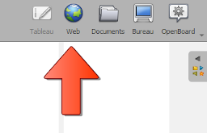
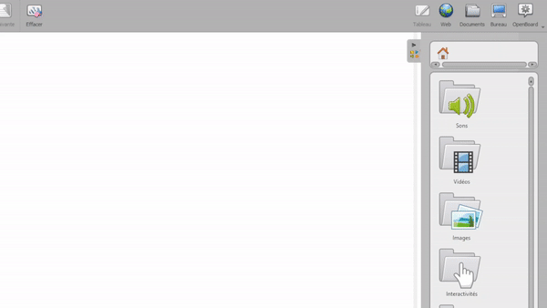

المتصفح المدمج
وضع الويب هو متصفح مدمج داخل OpenBoard يضيف إلى المتصفح التقليدي ميزات عملية جداً للاستخدام داخل الصف الدراسي.
يتيح لك تصفح الإنترنت دون مغادرة OpenBoard، والتقاط المحتوى (جزء من الشاشة أو الشاشة كاملة)، وحتى إنشاء تطبيقات من مواقع الويب لإعادة استخدامها في مستنداتك.

إنشاء تطبيق من موقع ويب
يمكنك إنشاء تطبيق من أي موقع ويب وإضافته إلى اللوحة والتفاعل معه كما تتفاعل مع التطبيقات المدمجة.
انتقل إلى الموقع المطلوب، ثم انقر على ثم أكّد العملية باختيار "إنشاء تطبيق".

بعد إنشائه، يُحفَظ التطبيق تلقائياً في مكتبة OpenBoard. ستجده ضمن التطبيقات > الويب ويمكنك إعادة استخدامه في أي مستند.

استخدام متصفح خارجي
يمكنك اختيار فتح الروابط في متصفح خارجي عن طريق تحديد الخيار المناسب في الإعدادات. انقر على
 سينطلق متصفحك المفضل كوضع سطح مكتب.
سينطلق متصفحك المفضل كوضع سطح مكتب.